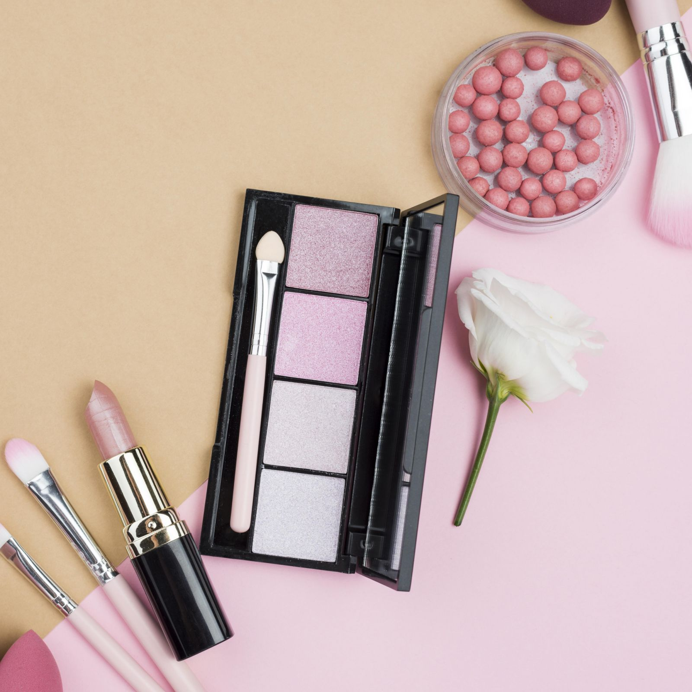

MAKEUP

Why is Makeup important? Enhances Appearance: Makeup can enhance
facial features, even out skin tone, and conceal imperfections,
boosting confidence and self-esteem. Creative Expression: It's a form
of self-expression, allowing individuals to showcase their creativity,
experiment with different looks, and express their personality.
Prime the Skin
A face primer is always applied as your first step, before proceeding
with your foundation. Creating a smooth canvas for makeup application,
primer helps to blur imperfections, and gives your foundation a
seamless base to adhere to, so you can enjoy your makeup look all day
long.
Foundation
Helping to even out the complexion, blur imperfections and create the
ideal base for the rest of your makeup – a trusty FOUNDATION is
essential in any makeup kit. We recommend the IRL FILTER LONGWEAR
FOUNDATION or the CONCEAL & DEFINE FOUNDATION.
Conceal
Next stop on
our makeup for beginners list - concealer! This will help you to hide
dark circles, blemishes, and any other imperfections that foundation
may not fully cover. You can also use this to brighten the under-eye
area to add more dimension to your look. We love our IRL FILTER FINISH
CONCEALER, to do just that. Eyebrow Gel We believe that the power of a
good brow can never be underestimated, it’s the best way to frame your
eyes and adding depth and fullness to sparse brows, BROW GEL gives
structure and balance, so you can fake it ‘till you make it. Shadow
Palette A shadow palette is a great addition to any makeup bag. Adding
color, depth, and dimension, eyeshadow enhances your eye shape and
makes them stand out. Add your creative touch, whether that’s subtle
and natural to bold and dramatic, use this step to express your
personal style. Mascara MASCARA is a must in any makeup routine for
beginners. Completing your eye makeup look, it works to open up the
eyes, making them appear larger and more defined. Adding length,
volume, and curl to your lashes, it’s the perfect finishing touch.
Bronzer and Highlighter A BRONZER and HIGHLIGHTER are essential in any
makeup kit. Bronzer adds warmth and dimension to your face, creating a
healthy, sun-kissed appearance, while highlighter, on the other hand,
adds a luminous sheen to the high points of your face, enhancing your
features and providing a radiant look. Eyebrow Gel We believe that the
power of a good brow can never be underestimated, it’s the best way to
frame your eyes and adding depth and fullness to sparse brows, BROW
GEL gives structure and balance, so you can fake it ‘till you make it.